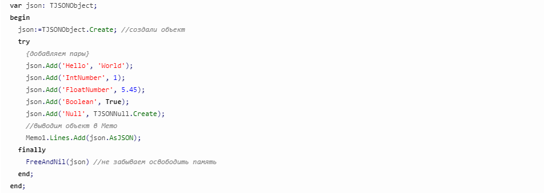

JSON и работа с ним различными языками программирования
Sidebar
JSON в Lazarus и Free Pascal
В Lazarus и Free Pascal (FPC) на данный момент имеется одна библиотека для работы с JSON, которая так и называется — fp-json.
TJSONNumber — число
TJSONFloatNumber — число с плавающей точкой (Double)
TJSONIntegerNumber — целочисленные значения (integer)
TJSONInt64Number — целочисленные значения (int64)
TJSONQWordNumber — целочисленные значения (QWord)
TJSONString — строка
TJSONBoolean — логический тип (boolean)
TJSONNull — неопределенное/пустое значение (Null)
TJSONArray — массив
TJSONObject — объект
Все эти классы являются потомками класса TJSONData. Также, в модуле fpjson определены следующие типы данных, касающиеся json:
простые типы данных
перечислители
множества
Пример создание JSON в Lazarus
